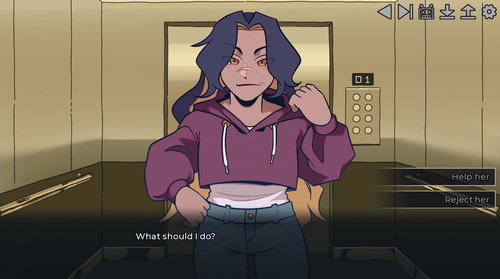
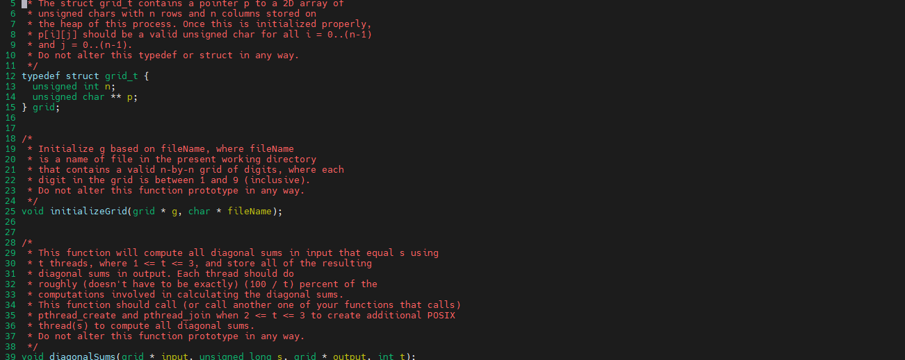

Projects

Laundry Day (Visual Novel)
- Led a 13-person team in making a visual novel by setting goals and deadlines to track progress and organize meetings
- Provided leading directions for art style, music, and UI
- Served as the lead writer for the team

Differences in Files Using System Calls
- Wrote a C program that compares two input files and outputs the differences between those two files into two additional files
- Designed and implemented the program in a Unix environment using open, close, read, and write system calls
- Utilized pointers and dynamic memory allocation and deallocation (with no memory leaks)

Multithreaded Diagonal Sum
- Wrote a C program that finds all the diagonal sums equal to x from a 2d grid of n-by-n digits (1<n<9) using 1-3 threads
- Demonstrated knowledge and use of data parallization